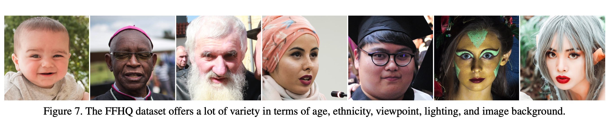
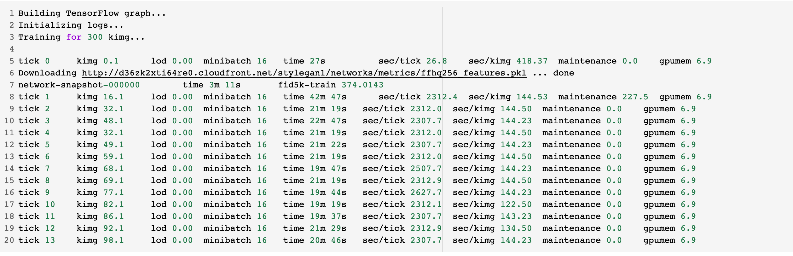
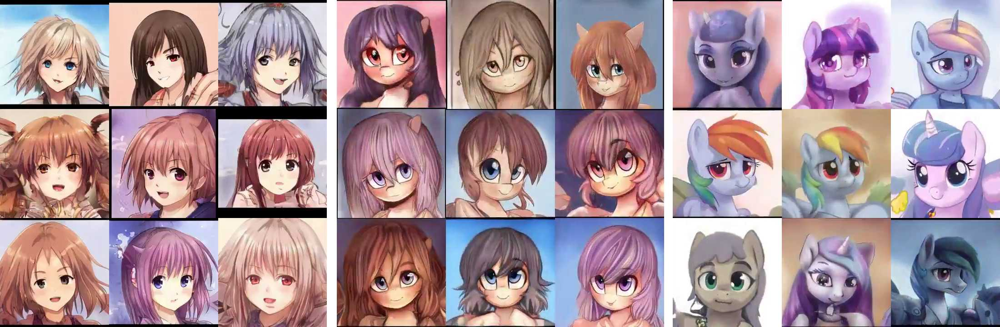

来玩玩图像生成吧!
前言
前段时间DIP的课程设计本来是想从零造一个GAN的轮子,但在具体了解了之后发现,现在基于GAN的图像生成模型已经相当成熟了,例如Google在2018年已经用BigGAN刷爆了ImageNet上的所有种类图像的生成(如图中BigGAN生成的汉堡)且都已经达到了可以“以假乱真”的水平了。轮子已经造好了,从零开始进行完成一个图像生成方面的模型是几乎不可能也是不必要的,很多原本一厢情愿的“创意”都变得相当的鸡肋。
不过另一方面,这些现成的模型也给了在更精细领域上进行产出成为可能。就例如在Github上的开发者roadrunner01就用动漫头像数据集来微调英伟达训练好的styleGAN人脸生成模型,得到了鼎鼎大名的“二次元老婆生成器”,生成样例如图所示。
受到“小姐姐生成器”的启发,我也开始尝试于通过小数据集来fine-tune已有的生成模型,训练出一个性化领域的图像生成器。最终很幸运从大神Justin Pinkney的博客找到了一个规模在5000张左右的日本浮世绘的人脸数据集,并以此为基础去fine-tune了已有的styleGAN2的人脸生成模型。最终训练得到了“浮世绘”生成器,取得了还算不错的生成结果,部分生成样例如图所示。
当然,这只是第一步,在阅读了styleGAN的论文和相关解读的博客之后,又进一步得到了更有趣的玩法,就是可以通过将两个styleGAN模型中生成器不同风格生成层（style-layer)的参数进行融合中融合,得到混合风格的生成结果。最终通过融合已有的人脸生成模型和浮世绘生成模型,分别得到了浮世绘风格的人脸照片与人脸到对应浮世绘的渐变图,其中部分融合模型生成结果如图。
以上的所有的训练与生成结果都部署在了谷歌Colab的在线notebook当中,可以通过浏览器直接运行并复现生成结果,notebook链接在 这里
GAN的原理补充
就我的自身理解,图像生成任务（或更广的讲,深度学习的几乎所有任务)是基于一个基本假设展开的,即一切事物的属性都有着其对应着某种分布特征,就好比与其他的图片相比,所有“猫”的图片在灰度值范围或者分布上是有其独特之处的,虽然那必然是一个极其“晦涩”的且难以从直觉上理解的高纬度特征,但深度学习飞速发展的事实证明,只要数据集样本够多且label正确,这样分布特征总是可以被够深的模型所找到。
在初次了解GAN的工作机制时,真的可以说是惊为天人,因为这种运作模式是在是太符合人类的直觉了,更难得的是一个如此符合人类直觉的模型竟然可以真的被实现,还取得如此好的效果。
GAN的大致结构如图所示,其主要是由两个神经网络组合而成,分别是生成器Generator(下计为G)和判别器Discriminator（以下计为D)。生成器负责通过根据输入（在图像生成任务中通常是和输出图片等尺寸随机噪音)生成人造样本。之后将生成样本与数据集中的真实样本同时输入到判别器当中。而判别器的本质也就是一个分类器,输出其对于输入样本的判别结果。套用一位博主的比喻,生成器就像是一个假钞的仿造者,而判别器就是一台验钞机,当的生成器仿造的假币可以顺利通过一台足够强大验钞机的时候,我们的生成任务也就达成了。唉,不得不再次感叹GAN这个创意的简洁与强大！
基于以上的工作原理即可以得到GAN的目标函数。
$$ V(D, G)= E_{x\sim p_{data}(x)}[\log D(x)] + E_{z\sim p_z(z)}[\log(1 - D(G(z)))] $$ 从公式不难可以看出中当判别器将所有样本的为真概率都输出为0.5时,目标函数可以达到最小值,也就可以理解为判别器已经完全无法分辨真实样本和生成样本,也就可以理解为生成器样本可以达到“以假乱真”的水平(当让这是在判别器也足够强大的前提下)
StyleGAN的特点
StyleGAN是本次实验使用的图像生成模型。它是Nvidia在2018年提出的。在阅读了网上其他博主对论文的解读之后,了解到StyleGAN的整体生成思路实际上是继承于ProGAN(渐进式生成对抗网络)。
而ProGAN的核心在于是其中的渐进式的生成模型。一张高质量的图像（比如$1024\times1024$的RGB图像)其中含有个过多的特征,直接生成是相当困难的。因此就可以由小至大,逐级生成。也就是,先使用非常低分辨率的图像（如：4×4)开始训练生成器和判别器,并且逐次开始训练生成器和判别器,增加更高分辨率（8×8、16×16…)的网络层,直到最后能产生一个具有丰富细节的高清图片。而这也正是StyleGAN的生成器$G_s$所采用的基本结构。但既然名字叫做StyleGAN,它的风格控制也就主要体现在每个分辨率的网络层都有一个独立的噪声输入$B$,可以通过改变不同层的噪声输入来调整各个层级的风格特征,大如性别,年龄,小到眉毛的粗细。
除此之外就是StyleGAN中新增的一个由八个线性层构成的输入映射网络$G_m$,作者说这里是通过映射使得网络生成的图像风格更为统一。模型结构大概就如图左所示,而右图则给出了在训练速度于生成质量上StyleGAN的优胜之处。
浮世绘图像生成
Ukiyo-E Faces 数据集
这次实验用到的是“Ukiyo-e faces dataset”。也是恰好找到了一个可以用且足够有趣的数据集。这是一个浮世绘数据集,是作者Justin Pinkney是从各大博物馆以及相关网站中爬下来的几千张浮世绘图片。但由于数据来源十分广泛,图片的质量和尺寸是千奇百怪,这里为了方便训练,作者专门使用了基于ESRGAN的分辨率增强模型,将所有图片统一到了1024X1024的分辨率,最终得到了一个5024张的浮世绘数据集,数据集的预览如图
就直观来看,利用这个浮世绘数据集来微调StyleGAN的可行性还是蛮高的,一来作为艺术作品,它的颜色风格相比于真实世界还是要更为固定一些,数据集中的人像质量都很高,风格也都较为统一,例如男性的发型和面部的朝向大致可以划分为几种常见的风格,面部的颜色也基本相同,此外作为一个微调任务,5000张高质量人像已经算很充足了。
模型结构
由于模型比较大,很难直观的输出参数,不过好在使用的这个英伟达在github上的放出的模型是用Tensorflow写成的,因此可以很直观的使用TF中的Tensofboard可视化的输出整个模型结构。使用Tensorboard输出整个模型如图,可以看到模型主题是由输入映射网络$G_m$,渐进式生成网络$G_s$和判别器$D$所构成的。
生成器$G_s$的内部结构如图所示,可以看到生成器中所串联的由$4\times4$一直到$256 \times 256$的分辨率不断提高的生成层,此外,每个生成层左侧所额外连接的输入即为StyleGAN中控制图像风格的噪音输入。
这里再输出一下StyleGAN中最重要的部分,就是其用来控制生成图像具体生成细节的风格层,这里以$G_s$中的128*128层为例,其结构如下图,与论文中的结构图类似（上右图为我根据slim模型结构重新绘制的生成层结构图),每个生成层都是由一个两个卷积网络,一个以及噪声输入的样式模块AdaIN和输出前的归一化层构成。
训练过程
这里参考了其他博主的微调经验之后。我选取了英伟达已经在FFHQ上训练完成的人像生成模型作为基准。在此基础上使用浮世绘数据集进行微调。FFHQ数据如图所示,其中包含了7万张1024分辨率的高清晰度人像。

这里的模型训练为了方便,就直接在英伟达官方放出的基于FFHQ数据集的训练代码上改了一下模型尺寸,然后就用google的COLAB跑起来了。使用的GPU就是一块google的免费提供的Tesla T4,性能基本等于一张RTX2070,算是很良心了。然后预训练模型的参数就选用的是英伟达在FFHQ数据集上训练好的256分辨率的slim结构的模型。

不得不说,GAN的训练确实比较耗算力,即使只是低分辩输入,slim结构的styleGAN模型也训练大概断断续了花了九个小时。
浮世绘风格的现代人像生成
使用fine-tune好模型的先随机跑了五十张图出来,效果如图[\ref{fig:result}]所示,可以看到生成结果还是相当可观的,至少大多数图片不论是从画风还是人物神态都是“有那味”的（当然也有一些“不成人形”的存在)。不过还是存在很明显的共性缺陷的,例如相当一部分生成人物都是“斗鸡眼”或者翻白眼。这里我猜测一来是算力有限的缘故,选取的参数比较少的slim的结构的StyleGAN,本身的特征捕捉能力就较弱；此外本身浮世绘中人像的眼睛都较小,特征较为难以捕捉,再加上为了适应slim的模型结构,输入图片都被从1024$\times$1024压缩到了256$\times$256,导致模型可以捕捉到的眼睛部分的特征更加稀缺,所以导致了生成结果的眼神都画风清奇。
ModelBlending 生成浮世绘风格的现代人像
模型融合的玩法
训练完生成模型之后,按理说该做的也就差不多了,可感觉到现在为止自己做的就是找到已有的代码和合适的数据集,然后稍微修改数据集的格式和运行代码,然后就结束了,完全就像是在玩一个黑箱。另一方面费了这么久训练出来的模型,就跑出几个看着还行的生成样例就要吃灰了,也太浪费了！StyleGAN一定还有更有趣的玩法。
结果确实如此,就在提供数据集的博主那里,就找到了一篇关于生成模型model Bledding的方法。大致就是通过融合StyleGAN不同模型中$G_s$的stylelaye,得到新的模型,从而生成具有混合风格的图像,博客中就给出了网上有人做的二次元小姐姐和小马宝莉的StyleGAN融合模型如图,别说效果还真不错。

作为一个非常流行的生成模型,StyleGAN的应用起来的一大优势就是有各种数据集上预训练模型可以直接拿过来用。另一方面本身这个浮世绘生成模型就是在FFHQ模型上上微调得到的,因此就可以直接把原本的FFHQ模型参数作为融合对象,这样就有可以得到浮世绘风格的现代人相。（不知道为什么一看到个玩法在我心里立马就蹦出了下图的画面)
Model Belnding 的原理
前面已经提到了StyleGAN的核心就是从ProGAN那里继承的渐进式生成网络,其生成的高清图像是从极低分辨率（$4\times4$)一层一层提升得到的,而相应的,每一层就对应了不同方面的风格特征,这也正是其在每一层添加噪声能修改其具体风格的原因。
基于这个特点,也就有博主提出了一种model-bleeding的方法,就是通过将两个模型的不同风格层融合得到新的模型,进而可以生成混合风格的生成图像。具体就是针对选择的生成层,将其中的参数进行融合。 $$ w_n = \gamma \cdot w_1 + (1 - \gamma) \cdot w_2 $$ 参数融合有两种方法,一种是软融合,就是将两个模型的参数比例系数$\gamma$进行加权融合,第二硬融合也就是$\gamma = 1$的特殊情况,即直接把模型1中一些生成层的参数换成对应模型2中的值得到新的模型,以下的融合均采用的是硬融合的方法。这里就贴一下模型融合部分的代码如图
模型融合的生成结果
既然要生层浮世绘的现代现代人像,那就是希望人像的样貌接近现代,而基于渐进式生成模型的原理,整个图像的画风则近似浮世绘,而图像的风格生成主要是高分辨率层在控制,人物的形象则是在低分辨率是就基本确定。因此这里选择使用ffhq数据集训练的人脸生成模型作为基础模型,然后再将高分辨率的生成层逐步替换为浮世绘模型的参数,使得模型具有浮世绘的图像风格,方法和替换后的结构可以见图
这里根据融合程度共新建了5个融合模型,然后对不同模型使用相同的输入即可得到风格渐变的生成结果。最终经过挑选后得到的较为可观的渐变的生成结果如图所示。这里面基本上16X16级别的融合模型就很好的实现了浮世绘风格的现代人人像的目标。而其中也有很多较为有趣的点,比如生成结果中第六列的女性,在ffhq人像模型中,其生成结果有一个抱手的动作,但当浮世绘模型逐渐替换到低分辨率的生成层时,此时人物的风格也开始被浮世绘模型所干涉,因此原本的手掌变成了扇子,真是神奇。
一些思考
融合生成结果中也有一些比较诡异的部分,比如就中等程度（32or64)的融合会出现非常惊悚的结果如图[\ref{fig:bad32}],这里我就猜测一方面人脸模型的负责生成眼睛的中间层不能完整的工作的同时浮世绘层有没有足够的特征生成丰富的面部表情。导致中等程度的融合（32或64)面部的内容出现了确实,才有了出现比较“少儿不宜”的生成结果。
此外还做了以浮世绘模型为基础的反向融合,效果也不是太好,我猜测原因也是由于浮世绘模型中的人脸特征不足以给出一个可以在“真实世界”里成型的人脸,导致在以真实世界作为高分辨率层的模型中人脸是扭曲的。
Reference
-
StyleGAN:A Style-Based Generator Architecture for Generative Adversarial Networks